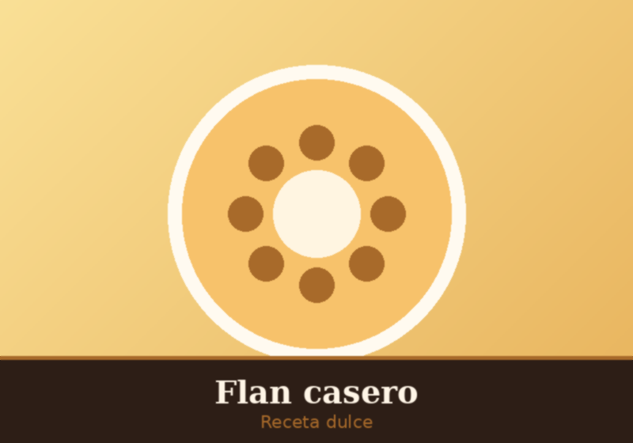

Mariana Torres
Este recetario es un proyecto personal mantenido por Mariana Torres, cocinera aficionada y entusiasta de la repostería casera desde hace más de diez años. Nació con la idea de reunir en un solo lugar recetas simples, probadas en casa y explicadas paso a paso, para que cualquier persona pueda animarse a cocinar.
¿Qué vas a encontrar acá?
- Recetas dulces y saladas organizadas por categoría.
- Una foto de referencia y el PDF completo para descargar de cada receta.
- Ingredientes y pasos claros, pensados para cocineros de todos los niveles.
El sitio se actualiza de forma periódica agregando nuevas recetas. Si querés proponer una receta o dejar un comentario, podés hacerlo desde la sección de contacto.